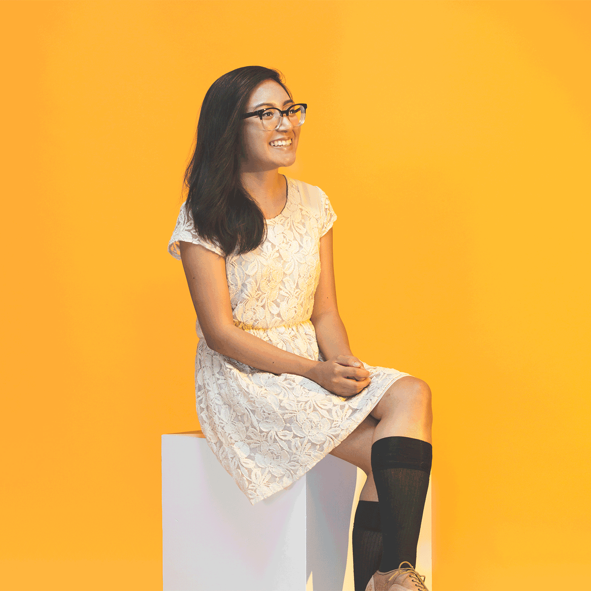

Graphic designer and self-proclaimed night owl.
Born and raised in the Orange County suburbs, Emily recently graduated from the BFA Graphic Design program at California State University, Long Beach.
She is a quiet little storm with endless ideas that run rampant through her mind. She is either a homebody or a wanderer, torn between spending her time indoors or exploring different pockets of Los Angeles. She is constantly drawn to unique packaging, captivating websites, and clean layouts. She also gathers inspiration like a spark to a flame — finding the catalyst to a concept and diligently working until that vision is fully realized. When she is not designing, Emily is usually reading a bunch of articles, engaging in some retail therapy, or eating a slice of pizza.